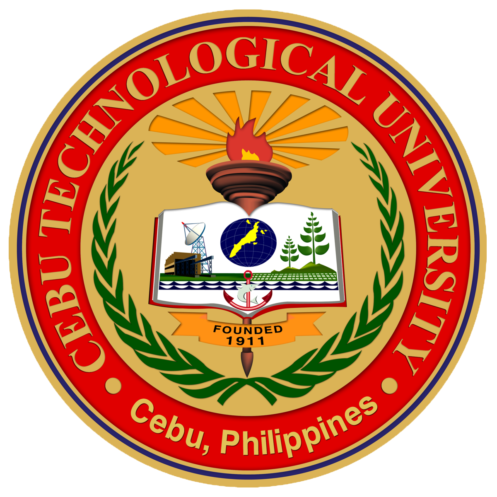

Are you ready to embark on a journey into the heart of modern technology and innovation? Look no further than a Bachelor of Science in Information Technology (BSIT) degree! In today's digital age, where technology drives progress, a BSIT program equips you with the skills and knowledge needed to thrive in this dynamic field. With a comprehensive curriculum designed to cover a wide range of IT domains, including programming, networking, cybersecurity, database management, and more, you'll be prepared to tackle real-world challenges head-on.
Imagine delving into the depths of computer science, exploring intricate algorithms, and unraveling the mysteries of software development. With a BSIT degree, you'll not only gain a solid foundation in these areas but also have the opportunity to specialize in cutting-edge technologies such as artificial intelligence, cloud computing, and data analytics. Whether you aspire to become a software engineer, a systems analyst, or a cybersecurity expert, the possibilities are endless with a BSIT degree by your side.
But wait, there's more! Beyond the realm of theoretical knowledge, a BSIT program offers hands-on experience through internships, capstone projects, and industry partnerships. Picture yourself working alongside seasoned professionals, applying your skills to real-world projects, and building a portfolio that showcases your expertise to future employers. With access to state-of-the-art laboratories, workshops, and simulation environments, you'll have the tools you need to turn your aspirations into reality.
In today's competitive job market, employers are seeking candidates with practical skills and relevant experience. A BSIT degree sets you apart from the crowd, signaling to employers that you possess the technical prowess and problem-solving abilities necessary to thrive in the ever-evolving IT landscape. Whether you dream of working for a multinational corporation, a tech startup, or even launching your venture, a BSIT degree opens doors to a world of opportunities.
But the benefits don't end there! As a graduate of a BSIT program, you'll join a global community of IT professionals, researchers, and innovators who are shaping the future of technology. From networking events and conferences to online forums and professional associations, you'll have access to a vast network of support and mentorship opportunities. With the backing of your alma mater and the camaraderie of your peers, you'll never have to navigate the complexities of the IT industry alone. So why wait? Enroll in a BSIT program today and embark on a journey that will propel you towards success in the digital age and beyond!


Are you passionate about the world of hospitality and eager to turn that passion into a rewarding career? Look no further than a Bachelor of Science in Hotel Management (BSHM) degree! Designed to meet the demands of the thriving hospitality industry, a BSHM program offers comprehensive training in hotel operations, guest services, event management, and more. With a focus on practical skills and hands-on experience, students graduate ready to excel in a variety of hospitality settings, from luxury resorts to boutique hotels, cruise ships, and beyond.
Imagine immersing yourself in the art of hospitality, learning the ins and outs of managing guest experiences, coordinating events, and ensuring seamless operations. With a BSHM degree, you'll gain invaluable knowledge in areas such as food and beverage management, lodging operations, revenue management, and hospitality law. From front-of-house to back-of-house operations, you'll develop the expertise needed to succeed in every aspect of the hospitality industry.
But the benefits of a BSHM program extend far beyond the classroom. Through internships, externships, and industry partnerships, students have the opportunity to gain real-world experience and forge valuable connections within the hospitality industry. Whether it's working at a five-star hotel, coordinating events at a convention center, or managing operations aboard a cruise ship, BSHM students graduate with the practical skills and professional network needed to thrive in a competitive job market.
In today's globalized world, hospitality professionals must possess not only technical skills but also cultural competence and adaptability. A BSHM program prepares students to navigate diverse cultural landscapes, communicate effectively with guests from around the world, and provide exceptional service in any setting. With a focus on experiential learning and multicultural understanding, BSHM graduates are well-equipped to excel in today's interconnected hospitality industry.
Furthermore, a BSHM degree opens doors to a wide range of career opportunities and advancement pathways within the hospitality industry. Whether you aspire to become a hotel manager, event planner, food and beverage director, or hospitality consultant, a BSHM degree provides the foundation for a successful and fulfilling career. With its blend of practical training, industry experience, and professional development opportunities, a BSHM program empowers students to pursue their passion for hospitality and embark on a journey toward success in one of the world's most exciting industries.